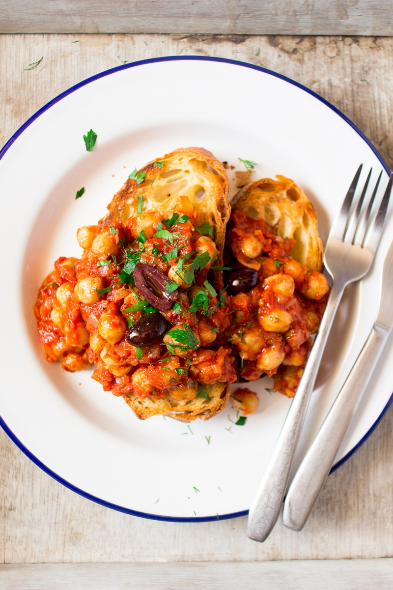

Greek Chickpeas on Toast
Add a dash of culture to your morning with this delicious toast, pictured here, created with Greece in mind!
Ingredients
- 2 tbsp olive oil
- 3 small shallots, finely diced
- 2 large garlic cloves, finely diced
- ¼ tsp smoked paprika
- ½ tsp sweet paprika
- ½ tsp cinnamon (or cumin)
- ½ tsp salt
- ½-1 tsp sugar, to taste
- black pepper, to taste
- 1 x 400 g tin of peeled plum tomatoes or 2 large tomatoes (skinned)
- 2 cups of cooked chickpeas
- 4-6 slices of crusty bread (gluten-free if required), toasted
- fresh parsley and / or dill, to garnish (optional)
- a few pitted Kalamata olives, to garnish (optional)
- Heat up olive oil on a medium pan.
- Add shallots and fry gently, stirring frequently, until almost translucent. Add garlic and fry until shallots are completely translucent and garlic is softened.
- Add all the spices to the pan. Mix them into the onion and garlic mixture and fry off gently for 1-2 minutes stirring the whole time.
- Squash tinned tomatoes or chop them roughly before adding to the pan with a couple of tablespoons of water. Simmer on low-medium heat until the sauce has thickened.
- Mix in cooked chickpeas and let them warm through in the sauce. Season with salt, sugar and black pepper.
- Serve on toasted bread with a sprinkle of fresh herbs and a few black olives.